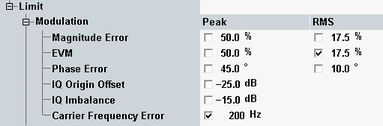

Transmit Modulation Limits
The WCDMA PRACH measurement provides a subset of the modulation limits available in the multi-evaluation measurement.

Modulation limit settings
For background information, refer to "Transmit Modulation Limits".